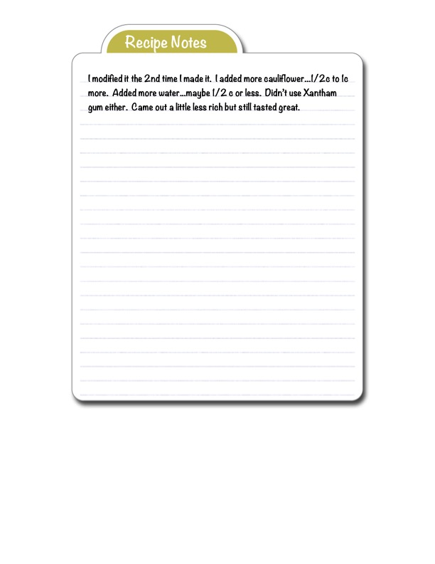

Recipe Notes Page - Cauliflower Recipe Modifications

Original cookbook page 27
Handwritten modification notes for a cauliflower-based recipe, documenting adjustments made on second preparation.
Ingredients
- Additional modifications to previous recipe:
- Extra 1/2 to 1 cup more cauliflower
- Extra 1/2 cup or less water
- Omit xanthan gum
Instructions
- These are modification notes for a previous recipe:
- Add more cauliflower (1/2c to 1c more than original).
- Add more water (maybe 1/2c or less).
- Don't use xanthan gum.
- Result: Slightly less rich but still tastes great.
Recipe #27 from collection